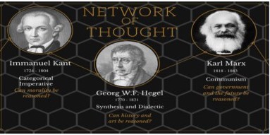

“History is the process whereby the Absolute Spirit empties itself into creation, and humans evolve from self-consciousness to god-consciousness.” He feels Kant is unable to reconcile the subjective and objective and Romantic emphasis on feeling and emotion. Kant is static, yet reality evolves. His inability to know the "thing in itself" is a mere stage in the growth of consciousness. Hegel is an idealist (reality consists of ideas), so while Kant's idealism is subjective, Hegel’s is absolute - we can know through our rational faculties. Spirit begins as undifferentiated, then successively differentiates until through dialectic achieving the reconciliation of Spirit. Religion is a social phenomenon to show people who they are; Protestantism makes priests of all believers, so that the divine is found not in church but in the state, and religion is eventually superseded by philosophy.

1810 Schleiermacher - Piety gives us experience of reality and our absolute dependence on god. Religion is a separate irreducible sphere of life; it is the sense and taste for the infinite, feeling part of the universe, in which we lose our sense of oneness and become one with the universe.
1835 David Strauss’ book The Life of Jesus posits that in Scripture people wrote a mythical rather historical text - true as myth, not as history. The gospels are true, even if they didn’t happen; they are parables meant to communicate a religious truth, just as Parson Weems invented the story of George Washington and the cherry tree.
1840 Emerson stresses defying convention and looking within for the unique insight (the Quaker Inner Light) granted to each individual, that no one else can find for one. "As men's prayers are a disease of the will, so are their creeds a disease of the intellect" (Self-Reliance, 1841).
~~~~~~~~